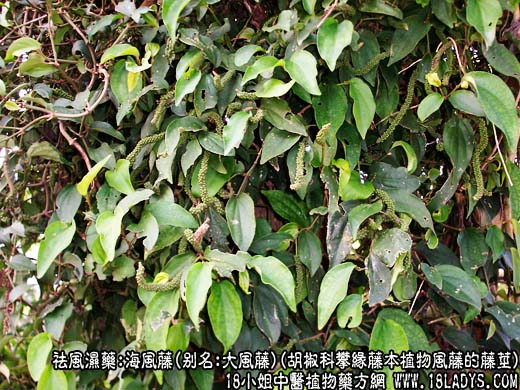
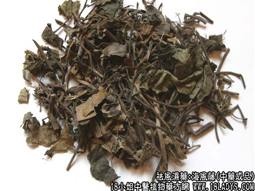

原文连接:https://www.daquan.com/post/2075.html



本草上未见记载，原植物主要为风藤。
别名：满坑香、老藤、大风藤、岩胡椒。
来源：为胡椒科常绿攀缘藤本植物风藤的藤茎。
产地：福建、浙江、湖南。
性状鉴别：藤茎扁圆柱形，长短不一，直径0.3～1厘米，表面灰褐色，粗糙，有纵向棱状纹理，节突起膨大，节间长3～10厘米，节上生有不定根。体轻质脆易折断，断面韧皮部窄，木质部灰黄色，有许多导管孔，射线灰白色与木质部相间放射状排列。木质部与韧皮部交界处裂成小洞成环球状。中央有灰褐色髓，髓部有灰黄色小点，系异形维管束3～5个。气辛香如辣椒，味微苦辛。以条粗均匀，气味辛香者为佳。
主要成分：含挥发油、鞣质和醣类。
药理作用：1、除湿；2、镇痛，温中散寒，行气止痛。
炮制：切片、生用。
性味：辛苦微温。
归经：入肝经。
功能：祛风湿，通经络。
主治：风湿痹痛，关节、腰膝疼痛。
临床应用：1、用于风湿关节痛、脚气浮肿、有腰膝无力而偏于寒者，常配独活、秦艽、桑枝等，方如蠲痹汤。中风后遗的手足不遂，也可在祛风活络剂中加入海风藤。
2、用于治疗胃脘寒痛（胃和十二指肠溃疡）、腹痛泄泻（胃肠炎），用海风藤15g，配救必应9g，水煎服。
用量：9～15g。
处方举例：蠲（juan，读圈）痹汤（《医学心司》）：海风藤12g，独活3g，羌活3g，桂心1.5g，当归9g，川芎2.4g，桑枝9g，乳香2.4g，木香2.4g，灸甘草1.5g，水煎服。
注：海风藤的品种比较复杂。全国大部地区使用的海风藤，为福建、浙江、湖南等地区的胡椒科风藤等数种植物的藤茎。福建省产的海风藤，主要为风藤；还有山蒟和石南藤（均为胡椒科）。浙江产的海风藤，原植物主要为山蒟，少数是毛蒟。这四种藤茎，在药材外形上不易区分，均为扁圆柱形。有些地区则以其中3毫米以下者作石南藤使用。京津销售习惯，用直径在3毫米以上者；3毫米以下者不用。
西北，中南、西南部分地区，以松萝科松萝等数种植物作海风藤。本品在上海又作老君须药用。此外，个别地区尚以木通科植物木通，白木通及木兰科异形南五味子的藤茎作海风藤用，均与上列附录中所说的显著不同，易于区别。